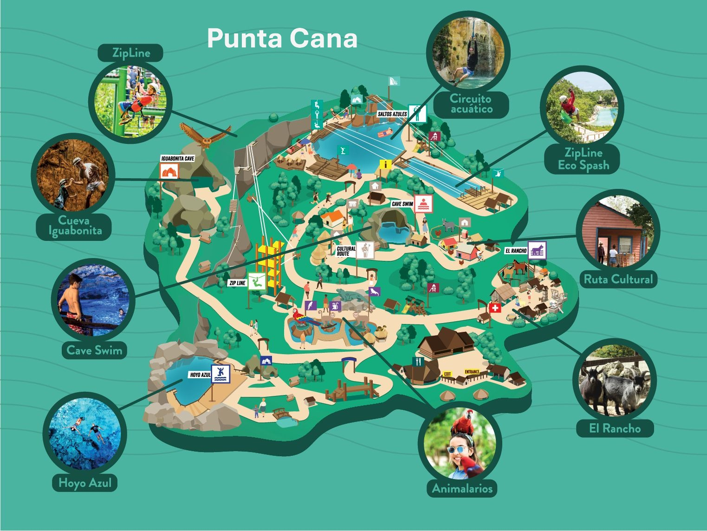
Tổng quan:
Thời điểm tốt nhất để đến thăm Punta Cana là từ tháng 12 đến tháng 4, khi thời tiết khô ráo và ấm áp, lý tưởng cho các hoạt động ngoài trời và thư giãn trên bãi biển. Mùa mưa thường kéo dài từ tháng 5 đến tháng 11, với lượng mưa và độ ẩm cao hơn
- 🔎 Chuyến bay Từ: Sân bay Quốc tế Dulles (IAD) hoặc Sân bay Quốc gia Reagan (DCA) - đến: Sân bay Quốc tế Punta Cana (PUJ).
- Hãng hàng không: American, United, Delta, JetBlue (thường bay thẳng từ IAD hoặc JFK).
- Thời gian bay: ~4.5–5.5 giờ (bay thẳng hoặc nối chuyến 1 lần)
- 🕒 Mẹo: Đặt trước ít nhất 4–8 tuần để có giá tốt.
- Tìm các gói bao gồm cả chuyến bay + khách sạn để tiết kiệm (Expedia, Costco Travel, v.v.)
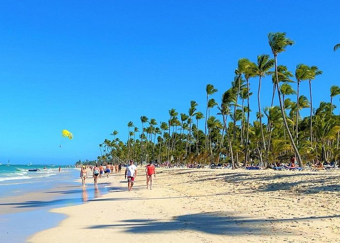
Điểm đến nổi bật ở Punta Cana.
- 🌴Playa Bávaro (Bãi biển Bávaro). Bãi biển nổi tiếng nhất Punta Cana
- 🏝️ 2. Isla Saona (Đảo Saona). Đảo thiên nhiên tuyệt đẹp, thuộc Công viên Quốc gia
- 🐠 3. Scape Park at Cap Cana. Khu phiêu lưu tự nhiên
- 🏄 4. Macao Beach (Playa Macao). Bãi biển công cộng. Phù hợp lướt sóng
- ⛵ 5. Bávaro Adventure Park. Công viên ngoài trời
- 🐬 6. Dolphin Explorer. Gặp gỡ cá heo, hải cẩu, cá mập thân thiện
- 🧘 7. Indigenous Eyes Ecological Park. Khu bảo tồn sinh thái.
- 🛍️ 8. BlueMall Punta Canai. Trung tâm thương mại
- 🍽️ 9. Chuỗi nhà hàng nổi bật. La Yola; Jellyfish Restaurant

🏨 Khách sạn/Khu nghỉ dưỡng ở Punta Cana
Punta Cana nổi tiếng với các khu nghỉ dưỡng trọn gói sang trọng. Đề xuất tìm kiếm:
🏆 Barceló Bávaro Palace
- 11 nhà hàng: buffet, Ý, Nhật Teppanyaki, hải sản, steakhouse, Dominica
- 13 quầy bar, quán cà phê và nightclub
- Gần biển, tiện nghi cao cấp, phù hợp gia đình
- Có khu riêng cho trẻ em và người lớn
- 👉 Link chính thức: Website

🍽️ Majestic Colonial Punta Cana
- 7 nhà hàng à la carte + buffet Ẩm thực: châu Á, Ý, steakhouse, hải sản, Dominica
- Room service 24h miễn phí
- Phù hợp gia đình hoặc cặp đôi, hồ bơi lớn, bãi biển đẹp
- 👉 Link chính thức: Website

🌟 Hyatt Ziva Cap Cana (luxury)
- 12 nhà hàng & quầy bar, ẩm thực quốc tế, grill, Dominica, Nhật Bản, sushi, tapas Tây Ban Nha
- Rất phù hợp với gia đình có trẻ em (có khu vui chơi nước)
- Nhiều lựa chọn ăn chay, không gluten
- Dịch vụ xuất sắc, phòng mới, rất sạch
- 👉 Link chính thức:Website
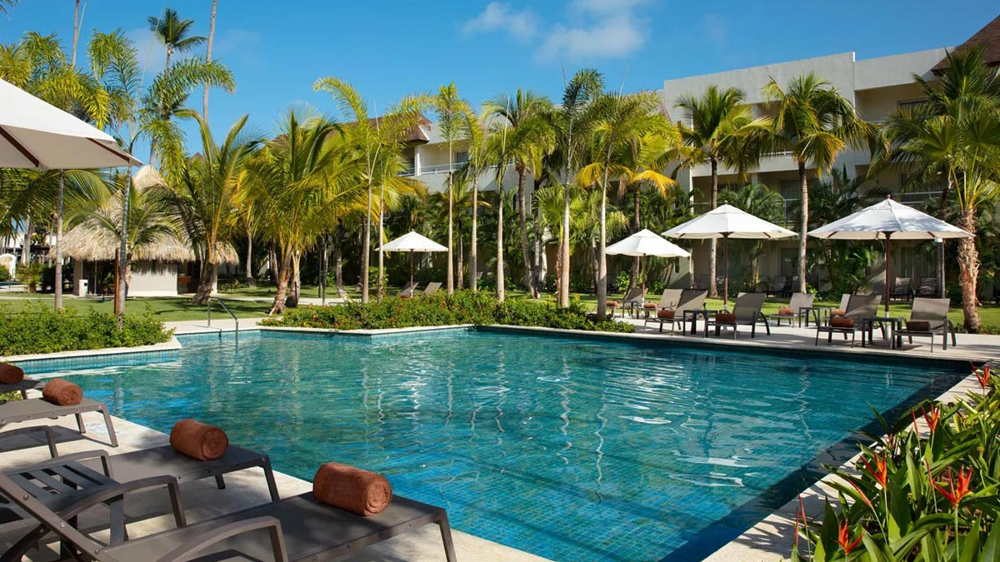
🍷 Dreams Royal Beach Punta Cana
- 9 nhà hàng (Mexican, French, Grill, Fusion, buffet)
- Có quán cà phê, quán bar bên hồ, nhà hàng trên bãi biển
- Phù hợp gia đình hoặc honeymoon
- 👉 Link chính thức:Website

🥂 TRS Turquesa Hotel (Adults Only)
- 7 nhà hàng & quầy bar (dùng chung với Grand Palladium)
- Thức ăn cao cấp, phục vụ tận nơi, cocktail & rượu mạnh miễn phí
- Rất phù hợp cho cặp đôi, honeymoon, yên tĩnh, sang trọng
- 👉 Link chính thức:Website

Mẹo khi chọn Resort
- Xem kỹ: "All-Inclusive includes dining at all restaurants"
- Đặt loại phòng Club/VIP để được thêm quyền vào nhà hàng cao cấp
- Nên đặt trước nhà hàng à la carte sau khi check-in
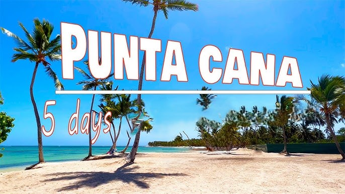
Dưới đây là hướng dẫn từng bước hoàn chỉnh cho chuyến đi 5 ngày du lịch của bạn từ Fairfax, VA đến Punta Cana
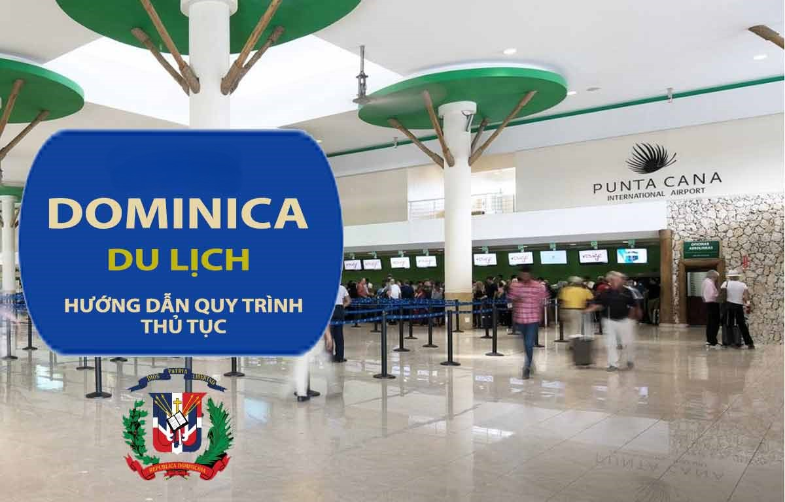
🎒BƯỚC 1: Chuẩn bị giấy tờ du lịch
- Hộ chiếu + mẫu vé điện tử in ra
- Quần áo nhẹ, đồ bơi, dép xăng đan
- Kem chống nắng, kính râm, mũ
- Thuốc chống côn trùng
- Túi đi biển + ốp điện thoại chống nước
- Bản sao xác nhận đặt phòng
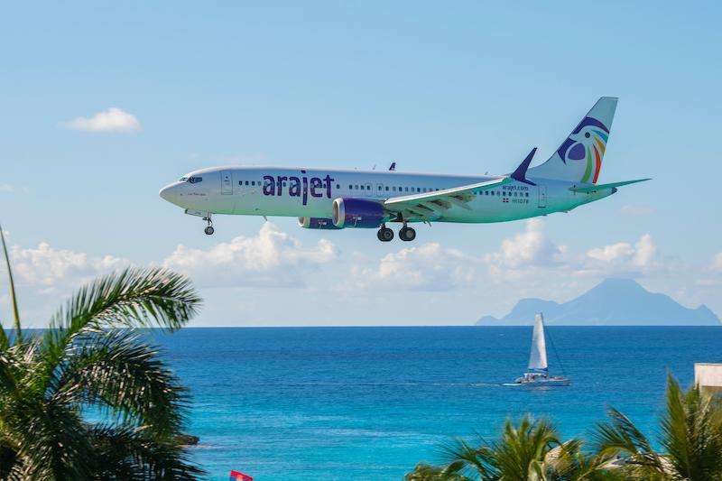
✈️ BƯỚC 2: Đặt chuyến đi của bạn
- 🔎 Chuyến bay: Bay từ sân bay Dulles (IAD) → Punta Cana International Airport (PUJ)
- Hãng hàng không: American, United, JetBlue, Delta, Southwest, Frontier
🚖 BƯỚC 3: Đến Punta Cana
- 📅 Ngày 1: Di chuyển về resort: Xe đưa đón (nên chọn All-Inclusive Resort như: Barceló Bávaro Palace, Grand Palladium, hoặc Dreams Royal Beach)
- Nhận phòng, thư giãn
- Chiều: Tắm biển tại Playa Bávaro, nghỉ ngơi trong resort
- Tối: Ăn tối buffet tại nhà hàng trong resort, tham gia show giải trí nếu có
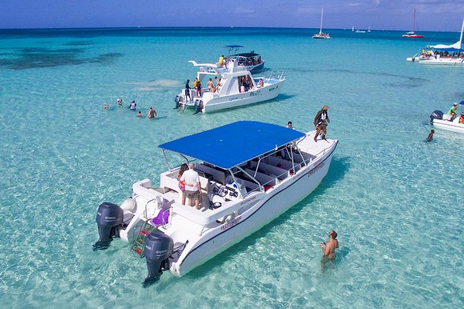
📅Ngày 2: 🏝️ Tham quan Đảo Saona (Isla Saona) – Tour trong ngày
- Sáng: Đặt tour đi đảo Saona (có đưa đón tại resort)
- Đi bằng catamaran hoặc speedboat
- Tắm biển, lặn ngắm san hô, ngắm sao biển
- Trưa: Ăn trưa BBQ trên đảo
- Chiều: Về lại resort, thư giãn hồ bơi
- Tối: Dùng bữa tại nhà hàng A la Carte (ẩm thực Ý, Nhật, Dominican…)
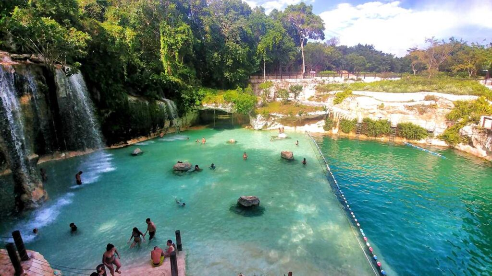
📅Ngày 3: 🌿 Scape Park Cap Cana – Hoyo Azul
- Sáng – Chiều: Trọn ngày khám phá Scape Park: Zipline, bơi trong hang xanh Hoyo Azul
- Tham quan hang động, thác nước, tắm thiên nhiên
- Tối: Thư giãn massage spa hoặc xem show tại resort
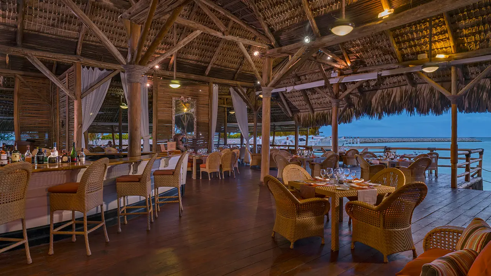
📅Ngày 4: Tự do nghỉ dưỡng + Khám phá ẩm thực
- Sáng: Tự do tắm biển, bơi lội, chơi thể thao biển (jetski, kayak…)
- Trưa: Dùng bữa tại nhà hàng Jellyfish Restaurant (gần biển, hải sản nổi tiếng)
- Chiều: Tham quan Indigenous Eyes Ecological Park hoặc đi mua sắm tại BlueMall Punta Cana
- Tối: Thưởng thức bữa tối tại nhà hàng cao cấp như La Yola hoặc Passion by Martín Berasategui (cần đặt bàn trước)

📅Ngày 5: ✈️ Mua quà – Trở về
Nếu bạn cần hỗ trợ ở Punta Cana
Dành cho công dân Hoa Kỳ cần hỗ trợ khẩn cấp (hộ chiếu bị mất, gặp rắc rối pháp lý, vấn đề y tế...)
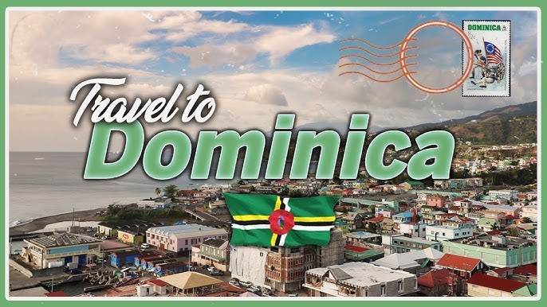
🏨Tổng cục Du lịch Cộng hòa Dominica (Ministry of Tourism - MITUR)
🚓 4. Cảnh sát du lịch (CESTUR – Politur)
- Số điện thoại tại Punta Cana: 📞+1 (809) 552-1060
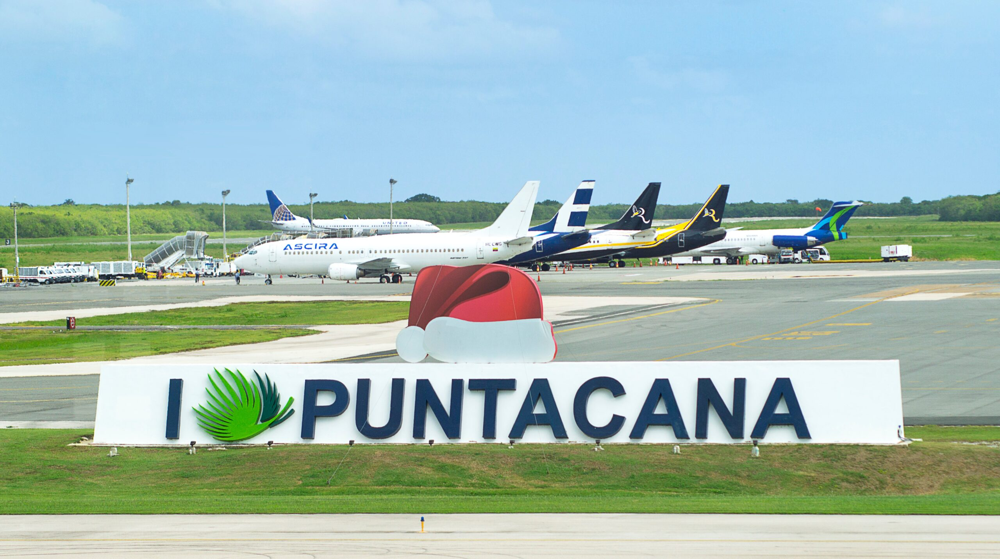
Trung tâm du lịch tại sân bay Punta Cana (PUJ)
- Đưa đón, taxi, mất hành lý
- Gọi giúp khách sạn, cơ quan địa phương
- Phản ánh dịch vụ sai lệch so với quảng cáo